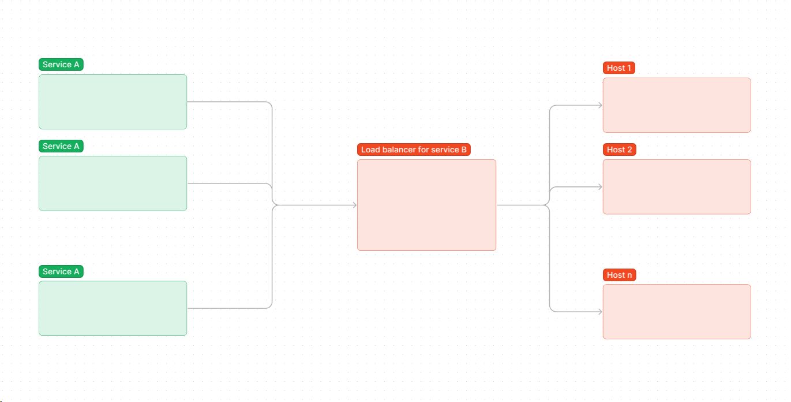
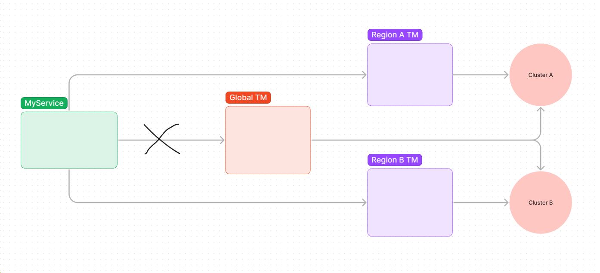
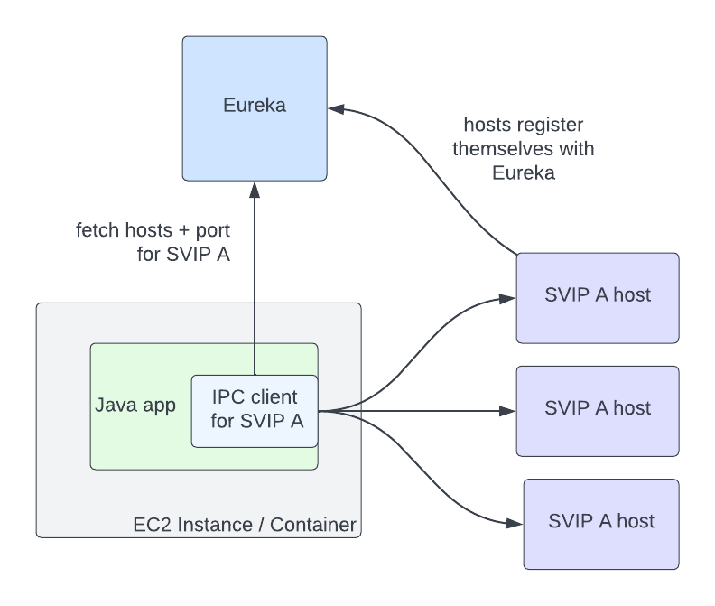

Using Client Load Balancing to Boost Service Availability
Elevating Service Availability and Banishing Single Points of Failure⌗
Earlier this year, my boss entrusted me with the task of assessing the impact of outages and identifying any potential single points of failure in our workflow. What I discovered was that every interaction my service had with other services, whether outbound or inbound, constituted a single point of failure. While the micro-service world often uses the term Inter-Process Communication (IPC) to describe this, my team prefers not to be bound by such jargon. Sometimes, it feels like my team operates in its own orbit, but that’s not the focus of this post.
Unpacking the Terminology⌗
Single Point of Failure⌗
Defining a Single Point of Failure (SPOF)
A Single Point of Failure (SPOF) is a critical component within a system or network. If it encounters an issue or failure, it can trigger a system breakdown, disrupting its operation and functionality. This often results in system downtime or a loss of critical functions. To mitigate the risk of SPOFs, it's vital to employ strategies like redundancy and failover mechanisms. These approaches ensure that essential services or processes can continue even in the face of potential failure points.
That’s the definition from ChatGPT. Our interpretation is more laid-back. To us, a SPOF is any element whose failure disrupts the scenario at hand. In simpler terms, there’s no backup plan for the SPOF. When it comes to IPC, our common approach involves placing a load balancer in front of a server cluster. Our service directs requests to this load balancer, which, in our case, is an Azure Traffic Manager when interacting with other services. The same applies to other services calling our own. In this setup, if a single server host falters, the load balancer removes it from rotation. For stateless services, this mechanism works seamlessly. However, for stateful services, concerns arise about persisting and retrieving session data. Let’s set this topic aside for now. With our pattern, the server isn’t the SPOF, but the load balancer itself is. If the load balancer fails, the entire cluster becomes unreachable, with no failover, and the scenario is disrupted.
This situation is somewhat inevitable with server load balancing. From the client’s perspective, it entrusts the balancing task to another service—the load balancer.

Blast Radius⌗
Defining Blast Radius
The term "blast radius" refers to the potential impact or extent of damage that can result from a security breach, system failure, or other adverse events within a network or system. It's often used in the context of cybersecurity and risk assessment to describe how far-reaching the consequences of a particular incident could be.
Again, this might be the formal definition, but for us, it’s all about understanding the impact of an outage. For example, if a service goes down, we want to know how many other services or regions would be affected. Since our service operates globally, containing the impact within a specific region if our partner service faces an issue is crucial.
With server load balancing, solving this problem seems straightforward. Suppose we can detect issues through, for instance, interval health checks. In that case, we can swiftly remove unhealthy hosts from rotation, ensuring that the blast radius remains limited to the problematic hosts. So far, we’ve only discussed availability; additional considerations like data integrity or service reliability are topics for another day.
In contrast to academia, meetings often skip the basics and assume everyone shares the same knowledge. In some companies where design reviews are taken seriously (you can probably guess my opinion on my own organization), people are encouraged to ask for clarification. Design documents and guidelines are crafted with clear standards.
“Can we assume that the audience knows what a micro-service is?”
So, What Was the Outcome of Your Boss’s Inquiry?⌗
My team’s engineering culture leaves room for improvement. From my observations, several factors contribute to this, from budget constraints leading to overwork and subpar quality to meet deadlines. There’s a major concern that I hesitate to voice, which could be mismanagement. The larger organization often appears disjointed, with guidance quickly becoming outdated and initiatives ending up half-baked. This particular effort serves as a prime example.
As I mentioned earlier, we’ve identified the issues. However, this isn’t just our problem; it affects every other service too. For now, we’re opting to let them address it or devise a solution. That was the latest update I have on this initiative, and we’ve temporarily shelved the discussion. Perhaps we can revisit it in the future when it holds more significant business implications.
Enough of the rant and negativity; I promise the next section will be more positive.
The Solution⌗
Our Company’s Approach⌗
One of the partner service teams came up with a pattern for request hedging, an addition to the server load balancing approach. Instead of sending a single request to the global traffic manager endpoint, their service sends two requests to primary and secondary endpoints, with some jitter in between. As soon as one response is received, it cancels the other pending request. This solution retains a relatively simple implementation for the IPC client, maintaining low latency by choosing the faster of the two requests. Most importantly, it addresses the SPOF issue mentioned earlier. However, it does introduce the cost of one redundant request and added complexity to the traffic distribution pattern. The latter could be problematic if services aren’t adequately scaled across different regions. Moreover, why should service A concern itself with service B’s internal capacity planning?

A Lucky Discovery on the Internet⌗
One day, while perusing tech blog articles, I stumbled upon Zero Configuration Service Mesh With On-Demand Cluster Discovery. Admittedly, I don’t possess the persuasive skills to convince my superiors that adopting this solution is worth the effort—perhaps if we enhance our engineering culture, but that’s a topic for another day.
The article details how Netflix embraced Envoy, an open-source project developed by Lyft. At the heart of their solution is client load balancing. Their main innovation is the ability to dynamically discover a host cluster, eliminating the need for initial configurations. Of course, there are limitations, but they all come with straightforward solutions.

Let’s discuss the relevance of this discovery for our post. This solution indeed banishes the SPOF issue. The “balancing” act is determined by a Service Discovery service, with the results loaded onto the IPC client. Even if the Service Discovery service encounters downtime, the client can still function using the last known good result.
Compared to the request hedging pattern mentioned earlier, this solution streamlines the process, requiring just one request. The responsibility of determining the best route for traffic lies with the Service Discovery side. Service B can provide feedback to the Service Discovery service, allowing complex balancing based on capacity planning and the current service’s health.
One aspect not covered in the Netflix article is how to manage routing by proximity. How can service A send a request to a service B instance that’s closest in proximity, be it in terms of network hops or physical location? This task could be handled by maintaining a graph on the service discovery side or on the client side, depending on the IPC client’s contract. I have a hunch that it’s easier to manage this outside the client, but if you have better insights, feel free to reach out.
The journey to adopting this architecture is long, but even implementing parts or a framework can be highly valuable and a worthwhile investment for us. I acknowledge that this level of optimization might be more of an intellectual exercise, offering limited value relative to the effort in most business cases. But then again, that’s what this platform is for, right?